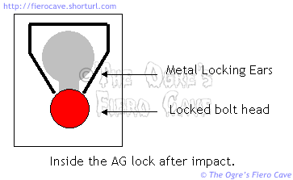
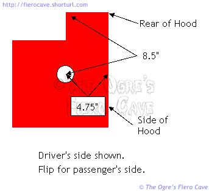

Go Home
Site Map
Go Home
Site Map
Fiero Hood System
Few people realize that the hood of any car or light truck is actually a somewhat complicated system with several safety features most people don't even notice. The only feature many people are aware of is the secondary latch on hoods that open from the front. (That second latch is actually required under FMVSS 571.113.) Fiero doesn't need that since the hood opens from the back.
Hood Alignment
If you are having trouble aligning your hood, check for bent hinges. The hinges are fairly easy to bend and just a small bend can keep you from getting the hood straight.
Broken release or jammed latch
The first couple work for allot of cars with cable release.
To release a stuck latch, try pushing down on the hood or banging over the latch with your hand while someone else pulls the cable. Once you get it open don't forget to clean and lube the latch. Silicone greases seem to work best.
If the cable or handle breaks... There is a second release cable hidden in the release lever assembly under the dash. Unscrew the lever from the dash to access this cable.
If you've broken both cables or the latch is too badly jammed, Skitime made a neat little tool for dealing with the latch without damaging your car. You can read about that here.
Anti Guillotine
Fiero hoods have a secondary locking system designed to keep the hood from coming thru the windscreen during a wreck. The system is comprised of two bolts, one at each rear corner of the hood, which fit into keyhole openings in the hood. When the hood is shoved back, these bolts lock in the keyholes providing much more anchorage, taking more load than the main latch could ever hope to hold.
 The Anti Guillotine system also includes a break line across the hood framing that is intended to allow the hood to fold up in a controlled manor. In Fiero you'll see four clearly visible notches across the hood frame starting next to the support bracket. (In a crash... Fiber glass hoods will usually break wherever they want. The break line does more for metal hoods most of the time.)
While this system is a really good thing in a big wreck, many Fiero owners have found it quite annoying after a small bump. If the hood is shoved back only a little, you may be able to unbolt the hinges and slide it forward to get it off the bolts. (Sometimes you can just grab the hood and pull forward.) If on the other hand the bolts have locked in the hood you will have to drill the hood to access the bolt heads.
If you have a hood you are trying to save, and assuming that the slots in the hood have not been torn by the bolts, they should end up in about the spot shown below. You'll need to try one of two things to get them loose.
Note: If the slots have torn, the hood should be discarded even if it looks ok otherwise. Torn slots will likely fail completely in another impact and allow the hood to come thru the glass.
 Drill a 3/8" hole in the area shown so you can insert a Torx bit to unscrew the bolts. Once the bolts are loose, open the hood and use a piece of metal to spread the tabs. I haven't tried this but if it works it leaves you with a minimal hole to repair in the hood.
Open a larger hole at the point shown so you can unscrew the bolt and pull it out.
The dimensions shown are as close as I could measure them to the center of where the bolt should end up. I measured from the bottom using a good hood. As I mentioned, if the holes have torn at all you should scrap the hood for safety even if the thing looks good in all other ways.
Do they work?
See this video. Good view at 0:5:30. Bolt arrested the hood enough to break/score line to fold the hood.
Do Anti Guillotine systems exist on other vehicles?
Yes. There are several ways it is done depending on make and model. In some cases you may see what looks like a hook sticking off the hood of front or rear opening hoods. Most front opening hoods just use the hinges. You'll usually see the break line across the middle of most hoods but they may not be as obvious as the one across the Fiero hood.
Because of Anti Guillotine features, there is a big problem with many modifications to hoods. If a modification makes the hood stiffer, it may fail to break/fold in a wreck and come thru the glass. Even with strong hinges or supplemental anchors like Fiero uses, the hood may just tear away and move straight back. Fortunately many modifications use fiberglass or plastic parts that are not very strong but this is still an issue to watch for when doing custom work.